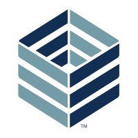

Pyyne - Software Engineering Consultant
-

Current Allocation - MSI
I am currently allocated to MSI, working on backend initiatives and shared platform capabilities.
-

Previous Allocation - Noom
Built and evolved services for Noom with focus on reliability, architecture consistency, and observability.